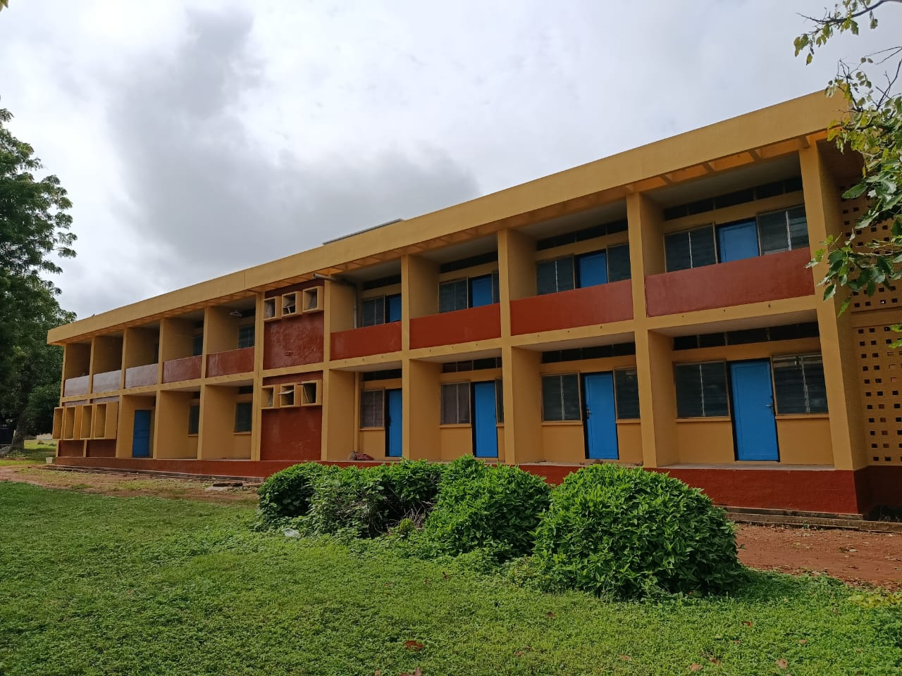

About Us
Welcome to College of Agriculture and Animal Science, division of agricultural colleges, Ahmadu Bello University, Mando – Kaduna

 WHO WE ARE
WHO WE ARE
This College of Agriculture and Animal Science, Kaduna started in 1951, as a Livestock Services Training Centre, Kaduna to train personnel in Veterinary services, principally Field Assistants in Livestock Management for the northern region. The centre later became Veterinary Field Station that comprised the Veterinary Public Health, Trypanosomiasis and Poultry Production Units and a Veterinary Investigation Laboratory.
The College of Agriculture and Animal Science was transferred to IAR/ABU in 1971, along with other sister schools of Agriculture at Samaru, Kabba and Bakura to form the then Division of Agricultural and Livestock Services Training (DALST). On 21st February, 1977, DALST was renamed Division of Agricultural Colleges (DAC) which is an autonomous unit of the Agricultural Complex of the Ahmadu Bello University and the council of Ahmadu Bello University changed the name of these Institutions from “Schools” to “Colleges”.
The College was established in accordance with Statute 16 of Ahmadu Bello University, Zaria, Kaduna State, Nigeria.
The goal of the College is to equip the trainees with adequate technical knowledge, practical skills and proper attitude for efficient extension work at the middle level manpower in Animal Heath and Animal Production and related courses. All the Programmes in the College have been accredited by the National Board for Technical Education (NBTE).
OUR MISSION
To equip trainees with adequate technical knowledge, skills, and proper attitude for efficient livestock productivity through using the best training and research method.
VISION
World class livestock Institute for training middle level manpower, research, and entrepreneurship development.